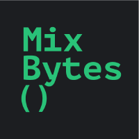

EIP-8205
Withdrawal Credentials Preregistration
In delegated staking, a dishonest node operator can deposit first, set its own withdrawal address, and steal the protocol's much larger deposit. Today every protocol defends against this on its own.
EIP-8205 is one shared solution: the operator commits to the withdrawal address before the deposit, and Ethereum enforces it. Opt-in; other deposits are unchanged.
Draft · Proposed for Inclusion in Hegotá
-
EIP-8205
-
PFI for Hegotá
-
CL spec
-
System contract
The problem
Whoever deposits first controls the ETH
Attack
A dishonest Node Operator can use a small deposit to take control of the Delegator’s entire stake
Delegated staking splits one validator between two actors. The Delegator provides the ETH. The Node Operator generates the validator key, keeps it, and uses it to run the validator. That same key lets a dishonest Node Operator submit a different deposit first and lock in a withdrawal address they control.
-
01 · The Delegator provides the stake
The Delegator provides the ETH for staking and chooses a Node Operator to run the validator. The Delegator expects to remain in control of the stake and receive the validator’s withdrawals.
-
02 · The Node Operator runs the validator
The Node Operator generates and holds the validator key, then uses it to run the validator. In return, the Node Operator usually receives a fee or a share of the staking rewards.
-
03 · Deposit data describes the validator
Before the validator can be created, the Node Operator prepares signed deposit data. It contains the validator public key, the amount, a signature, and the withdrawal credentials — the destination for future withdrawals.
-
04 · The first valid deposit assigns control
When Ethereum processes the first valid deposit for a validator key, it creates the validator record and copies the withdrawal credentials into it. Later deposits can add ETH to the balance, but they cannot replace those credentials.
-
05 · The Delegator receives the expected deposit
The Node Operator signs deposit data containing the Delegator’s withdrawal credentials and gives it to the Delegator. The validator key, signature, and withdrawal destination are all exactly as agreed.
-
06 · The Node Operator creates another version
But the Node Operator still holds the validator key. A dishonest operator can sign a second, equally valid deposit for the same key — this time using their own withdrawal credentials and only 1 ETH.
-
07 · The 1 ETH deposit is processed first
The Node Operator submits the 1 ETH deposit before the Delegator’s deposit is processed. Ethereum creates the validator record from it and stores the Node Operator’s withdrawal credentials.
-
08 · The address stays; only the balance changes
When the Delegator’s deposit arrives, the validator already exists. Ethereum adds the Delegator’s ETH to its balance but does not replace the withdrawal credentials. The Node Operator now controls both the validator key and its withdrawals.
Known since 2019
2019
Researchers documented the deposit front-running vulnerability publicly in 2019, before the Beacon Chain launched. No production exploits are known to date — every delegated staking protocol treats it as critical and built its own defense around it.
The scale
About 2/3 of staked ETH is technically exposed
The vulnerability applies wherever the funding party and the key holder are distinct parties — centralized exchanges, liquid staking protocols, and staking-as-a-service providers.
Liquid staking protocols, with documented defenses
Exchanges and staking services, relying on off-chain arrangements or with no published protection
Unidentified in this data source, cannot be attributed
Everyone built their own fence
Seven implementations, two strategies
Delegated staking protocols have converged on two main defense strategies. Both work, and both impose costs that each protocol bears independently.
On narrow screens, scroll horizontally to compare every column
| Protocol | Strategy | Capital locked | Verification | Trust assumption |
|---|---|---|---|---|
| ether.fi | Pre-deposit | 1 ETH protocol capital | Oracle attestation | Oracle honesty |
| Lido stVaults (PDG) | Pre-deposit | 1 ETH operator collateral | EIP-4788 Merkle proof | Trustless |
| Lido DSM | Guardian | None | depositRoot snapshot |
4/6 committee quorum |
| Puffer Finance | Pre-deposit | 2 ETH operator bond | Guardian verification | Guardian honesty |
| Rocket Pool Saturn | Pre-deposit | 4 ETH operator bond | EIP-4788 state proof | Trustless |
| Stader ETHx | Pre-deposit | 4 ETH operator bond | Oracle verification | Oracle network honesty |
| Tranchess SafeStaking | Guardian | None specified | Safeguard node quorum | Safeguard node honesty |
Bond and pre-deposit verification
The operator deposits a small amount first (1–4 ETH), then proves on-chain that the pending validator has the correct withdrawal credentials. Only after verification does the protocol release the remaining funds.
Guardian committees
A trusted group of signers attests that no malicious pre-deposits exist before authorizing each deposit batch. This avoids locking capital, but introduces trust and liveness requirements.
And none of the fences are free
31–2,047 ETH
Sits idle while the pre-deposit clears
The validator record appears only after the 1 ETH pre-deposit clears the churn-limited entry queue. Until its credentials can be proven on-chain, the rest sits in the protocol's contracts earning nothing — and the queue can stretch to months.
+31 ETH
To recover a stranded 1 ETH
Deposits are one-way, and activation requires 32 ETH. Recovering an abandoned pre-deposit means depositing 31 more, activating, then exiting — if liquidity is short, it stays stranded.
Any deposit
Can invalidate a guardian snapshot
A guardian attestation is bound to one depositRoot. Any call to the Deposit Contract in between — even an unrelated one — changes that root and reverts the whole batch, so the deposit has to land first in its block.
Off-chain
Adds trust and liveness risk
Committee members can collude, signing software adds supply-chain risk, and quorum must stay available. Rate limits, pause controls, monitoring, and alerting become part of the security system.
Per protocol
The same guarantee is rebuilt
Contracts, proof logic, oracle or guardian infrastructure and monitoring are rebuilt per protocol, and every hardfork may require review. There is no shared library: new entrants are exposed until they build their own — months of engineering plus an audit.
The solution
Preregister the address before depositing
The key holder signs the withdrawal address in advance. The chain remembers the commitment and refuses any deposit that does not match it. The race stops deciding anything.
A small change with big impact
Existing rails on the EL, bounded additions on the CL
No new transaction type, no new cryptography, no change to how deposits work. The proposal reuses the EL→CL request pipeline that Ethereum already ships, and adds validation and short-lived storage on the consensus side.
Execution layer
A well-trodden path
Ethereum already runs a standard bus for execution-to-consensus requests: a system contract takes the call, charges a fee, and queues the request for the beacon chain via EIP-7685. EIP-8205 adds one more contract of the same shape.
Consensus layer
Validation and a short-lived store
One extra check inside deposit processing, and a small store of pending commitments that expires on its own.
-
01
One BLS signature check per request — the same verification a deposit already performs
-
02
An extra validation step during deposit processing — if a commitment exists for that key, it must match
-
03
A bounded store of commitments — entries expire after about 36 days, so nothing accumulates
-
04
At most four requests per block — a hard cap on the work added
How a protocol would use it
-
01
Sign the commitment
The node operator signs a commitment binding one specific public key to one specific withdrawal credentials. They can then hand it to the protocol to submit with the deposit, or submit it themselves.
ONE SIGNATURE TO BIND PUBKEY → WITHDRAWAL CREDENTIALS
-
02
Submit it
The commitment is sent as a transaction to the execution-layer system contract, the same way as any other EL → CL request: EIP-7002, EIP-7251, EIP-8282.
EL contract → EIP-7685 request → CL processing
-
03
Deposit with proof
Once the preregistration is on the consensus layer, depositing is safe — there is nothing left to front-run. The protocol can send the deposit in a transaction carrying a proof that the commitment is present in the consensus-layer state, checked against the beacon block root exposed on the execution layer by EIP-4788.
Merkle proof of the preregistration · beacon root via EIP-4788
Progress
The specs are ready for client implementation
-
The EIP
Standards Track, adapted to the latest Gloas spec
✓ Draft -
Consensus spec
Full spec change with test coverage
✓ Spec✓ Tests✓ Merged -
System contract
Execution-layer predeploy on the EIP-7685 request bus
✓ Implementation✓ TestsIn reviewAudit -
Reference verifier contract
Checks the beacon-root proof that a commitment exists, then makes the deposit
In progress -
Client implementations
CL and EL client support
Not started -
Devnets
Interop testing across clients
Not started
FAQ
Questions, answered
EIP-8205 is a draft, so details and parameters may still change.
The essentials
Doesn’t the attacker need the validator’s private key?
Yes — and the attacker already has it. The attacker in this threat model is not a stranger. It is a malicious node operator. In delegated staking, the operator holds the validator key, and a staking protocol or a delegator supplies the ETH.
The attack is simple:
- The operator deposits first. A small deposit with the operator’s own withdrawal credentials registers the key.
- The protocol’s deposit becomes a top-up. It adds funds to the attacker’s validator. A top-up cannot change the withdrawal credentials.
EIP-8205 protects the funding party from the key holder. An outsider without the key cannot run this attack at all: a deposit that creates a validator needs a valid signature from that key.
Who needs to use preregistration, and does it affect existing validators?
Preregistration is for setups where one party holds the funds and another party holds the validator key. Everyone else can ignore it:
- Existing validators are safe. A preregistration cannot change the withdrawal credentials of an existing validator. A key that already has a validator cannot be preregistered at all.
- Current flows do not change. Keys without an active preregistration follow today’s rules. Top-ups, withdrawals, solo stakers, exchanges, and institutions that hold both funds and keys are unaffected.
- Protocols with existing defenses adopt at their own pace. Bond-based flows keep working, and adoption removes the verification delay and the locked bond. Guardian flows that approve
depositRootsnapshots need one update to their deposit flow — in return, the protocol-level guarantee replaces the committee and its liveness dependency. - It is not a registry. Preregistration is not a whitelist and not an identity layer. Submission is permissionless, and the record grants no rights. It only constrains future deposits for one key, because the key holder signed that constraint.
How does preregistration protect the delegator’s funds?
The key holder commits to specific withdrawal credentials before any deposit, and the consensus layer enforces that commitment.
The flow has three steps:
- Sign. The operator signs a message that binds the validator pubkey to specific withdrawal credentials, and hands it to the delegator together with the deposit data.
- Submit. The delegator sends the signed request to the system contract. The record becomes active once the consensus layer processes the request, usually within a few blocks, and stays active until a matching deposit consumes it or it expires after about 36 days.
- Verify and deposit. The delegator proves the record and its expiry from beacon state through EIP-4788, checks the current slot through EIP-7843, and deposits in the same transaction. If the proof is missing, wrong, or expired, the transaction reverts before the ETH moves.
While the record is active, the consensus layer accepts a deposit for that key only if the credentials match and the deposit signature is valid. An active record also proves that nobody front-ran the delegator: the key has no validator and no valid pending deposit yet.
If a deposit’s withdrawal credentials do not match the preregistration, is the ETH lost?
Yes. The consensus layer silently rejects a deposit that conflicts with an active preregistration. The ETH stays in the Deposit Contract, which has no withdrawal function.
This is not a new kind of loss. A deposit that creates a validator must already be valid today: if its BLS signature is invalid, the consensus layer ignores the deposit, and the ETH is unrecoverable. EIP-8205 adds one more validity condition: while a preregistration is active for the key, the withdrawal credentials must match it.
The scope is narrow. The rejection can only hit a deposit for a key that has an active preregistration with different credentials. In practice, that is the attacker’s own deposit, or a flow that skipped verification. In the intended integration, verification and deposit run in one transaction, so a mismatch reverts before the ETH moves. Deposits for keys without a preregistration never see this rule.
The design
Why fix this at the protocol level instead of the application layer?
Because only the consensus layer can give the needed guarantee: “no deposit for this key can set different withdrawal credentials.” The consensus layer decides which deposits take effect. Applications can only approximate this rule in two ways:
- A bond. The operator deposits a small amount first. The protocol waits until the validator record appears in beacon state, proves its withdrawal credentials on-chain, and only then sends the rest as a top-up. Capital sits locked while the entry queue clears.
- A guardian committee. A trusted committee checks a snapshot of all deposits (the Deposit Contract’s
depositRoot) and approves the batch only if no hostile deposit is inside. The approval is bound to that exact snapshot: any new deposit changes the root and invalidates it. This adds a trusted party and a liveness dependency.
Both are workarounds with real downsides: locked capital and waiting in one case, a trusted committee and fragile approvals in the other. And each protocol builds, audits, and maintains its own copy. EIP-8205 replaces these workarounds with one universal rule inside the deposit flow: no bond, no committee, no waiting. The rule knows nothing about protocols or operators, only about one key and its credentials.
Who benefits from EIP-8205?
Anyone who stakes ETH with a validator key that someone else holds, and wants that stake protected on-chain: staking protocols, institutions, and individual delegators.
- Established protocols replace their bonds and guardian committees with one protocol rule.
- New protocols start protected from day one. Today a new entrant is vulnerable by default until it builds its own defense.
- Institutions and individual delegators get the guarantee from Ethereum itself, not from an operator’s promise.
Nothing in it is protocol-specific: no allowlist, no privileged caller, no operator registry. A BLS signature from the validator key is the only authorization.
Doesn’t this just move the race from deposits to preregistrations?
The race can still happen, but it no longer decides who controls the ETH:
- The delegator deposits only after the record is active. The deposit transaction includes a proof that the record is in beacon state, and it reverts if the proof fails. Once the record is active, there is nothing left to front-run.
- A faster attacker only burns the key, never wins the ETH. The operator can still send its own deposit before the preregistration becomes active. Then the consensus layer never stores the record: a key with a pending deposit cannot be preregistered. The delegator sees no active record for that key, does not deposit, and loses nothing.
So a malicious operator can only block its own keys. Blocking gains the operator nothing: an operator earns from running validators, and a blocked key simply never receives the deposit.
How big is the change for clients?
The EIP looks big at first glance, but most of its length is boilerplate for the EL → CL request bus, not new logic:
- On the execution layer, it is a familiar pattern. One more system contract like EIP-7002, EIP-7251, and EIP-8282, copied with small changes: the same queue, the same fee, the same system call.
- The consensus-layer changes are fairly simple. One extra check when processing deposits, and a capped store of preregistrations in beacon state that expires on its own.
- The added load is small and bounded. A payload (the execution part of each block) carries at most four preregistration requests: up to 704 bytes of data and four signature checks, and a gas limit increase does not raise that cap.
The trade-off: one shared implementation in clients, or every delegated-staking protocol building and auditing its own bonds, proofs, guardians, and monitoring for the same credentials check.
More technical
Can anyone submit a preregistration for someone else’s key?
Anyone can relay a signed request. Nobody can author one without the key.
- The signature is the authorization. The consensus layer stores a request only if it carries a valid BLS signature from the validator key.
- The contract is only a queue. It checks the fee and the input length, nothing more. The consensus layer discards invalid signatures later, and the fee is not refunded.
- Existing validators cannot be targeted. A key that already has a validator, or a valid pending deposit, cannot be preregistered.
Can preregistrations be spammed?
Submission is permissionless, but the parameters are set so that spam does not pay:
- The fee is a rate limiter. It starts at 1 wei and grows exponentially while demand stays above the target of one request per block. Transaction gas is separate. The fee changes only in the next block, so one block can create a backlog, but the consensus layer admits at most four requests per payload.
- State is bounded. Active records expire after about 36 days and are capped at 524,288 — about 46 MB at that limit. To reach the cap, an attacker needs a sustained above-target rate, and therefore an exponentially growing fee.
- What the fee does not prevent. At exactly the target rate, the fee stays minimal, and an attacker can hold roughly
2**18records — about 23 MB before client overhead. The fee limits the rate. It does not promise cheap or immediate inclusion.
Does preregistration add a second validator entry queue?
No. A preregistration carries no ETH, creates no validator, and consumes no activation churn.
- It uses a separate, rate-limited request queue. That queue only checks and stores the signed binding.
- After the binding is provable, the delegator sends one normal deposit. That deposit follows the existing pending-deposit and activation flow.
This avoids the pre-deposit pattern, where a protocol must lock a small deposit, wait, verify, and only then send the rest of the stake.
Can a preregistration be cancelled, changed, or replaced by a conflicting one?
No. The first valid commitment that becomes active wins for the lifetime of that record. It cannot be cancelled, overwritten, or refreshed.
- A matching valid deposit consumes it.
- Otherwise it expires. After 262,144 slots (about 36 days at today’s 12-second slots), the record becomes inactive, and epoch cleanup removes it.
- The signed message itself never expires. After the record expires, anyone can submit the same message again, as long as the key still has no validator and no valid pending deposit.
- Later signatures do not replace it. If the operator signs a second commitment with different credentials, the first active record still wins. That is why the deposit proof checks the exact credentials, not just that some record exists.
Treat the signature as a permanent commitment. If the operator signed the wrong credentials, the safest option is to abandon that validator key.
What exactly does the operator sign, and why not reuse the deposit signature?
The operator signs one pair: the validator pubkey and the withdrawal credentials. The signature uses a dedicated BLS domain with two properties:
- Fork-agnostic. The domain uses the genesis fork version. The operator can sign on air-gapped hardware without knowing the current fork.
- Chain-separated. The domain includes
genesis_validators_root, so a mainnet signature is useless on any testnet.
A deposit signature cannot serve this purpose. It also binds an amount, its domain is replayable across chains, and reuse would retroactively give old deposit signatures a new meaning. Any setup that signs deposits today, including DVT threshold signing, can produce this signature the same way.
Community perspectives
Voices of support
On fewer trust assumptions, simpler deposit protection, and a shared solution for delegated staking.
-
Smart contract auditor
Security researcherLiquid staking protocols shouldn’t need additional trust assumptions or workarounds for something the consensus layer can give them a clean primitive for.
-
Research team
Ethereum scaling researchExisting solutions to the problem are not good enough as they either introduce significant delays (as in Rocket Pool) or permissioned actors (as in Lido). Projects should not be forced to make this tradeoff.
-

Smart contract auditors
Security researchersPreregistration replaces all of that with one check at deposit processing time, and reuses the EIP-7002/7251 request pattern rather than inventing a new one. Nothing changes for solo stakers, top-ups, or existing validators. We think this is the right shape for a fix at this layer.
-
Validator team
Four PillarsEIP-8205 seems to effectively shift deposit security from being the responsibility of individual protocols to the Ethereum protocol itself.
Backing EIP-8205 for Hegotá
-
Teku
Ethereum consensus client
Atier for EIP-8205
Paul Harris, a Teku developer, also backed EIP-8205 for Hegotá, placing it in A tier.
-
L2BEAT
Research team
Btier for EIP-8205
Support needed
Get it into Hegotá
EIP-8205 is Proposed for Inclusion in Hegotá. Client teams and the community decide what makes the final scope — support now is what moves it forward.
Client teams, community
Include it in your vote
Put EIP-8205 on your Forkcast ranking, where the fork's priorities are actually assembled.
Rank it on ForkcastVALIDATORS
Vote for the EIP
One click on the EthVA hub. Community signal is read alongside client-team ranking.
Vote on EthVA hubResearchers, protocols
Comment in the thread
The thread that matters for Hegotá. Say whether the problem is worth protocol surface.
Open the thread